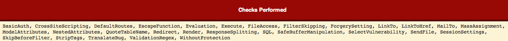
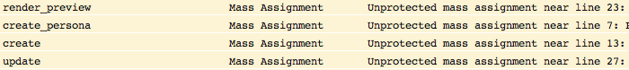
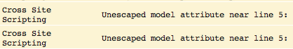
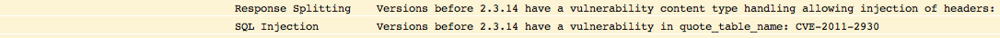

Securing the Rails
Table of Contents
- 1 Securing the Rails
- 2 What we're going to cover
- 3 What we're not going to cover
- 4 This sounds like a lot, but you get a lot for free!
- 5 Cross Site Scripting (XSS) Basics
- 6 Cross Site Request Forgery (CSRF)
- 7 SQL Injection
- 8 Session Hijacking/Replay
- 9 Mass Assignment
- 10 Exception Handling and Notification
- 11 Static analysis tools
- 12 Where can I learn more?
- 13 References
1 Securing the Rails title
2 What we're going to cover
- Cross Site Scripting (XSS)
- Cross Site Request Forgery (CSRF)
- SQL injection
- Session management
- Mass assignment
- Exception handling/notification
- Static analysis tools
- Where can you learn more?
3 What we're not going to cover
- Physical security of your servers
- Operating System security
- Configuration management
- Compliance concerns
4 This sounds like a lot, but you get a lot for free!
5 Cross Site Scripting (XSS) Basics
- A User injects executable code into your application
<script>alert('xss');</script>
curl -d "user[name]=<script>alert('xss');</script>" \ "http://localhost:3000/user"
- Your application saves it
- When your application renders that information the code is executed
5.1 Possible outcomes of a successful XSS attack
- Cookie theft
- Session hijacking
- Redirection of user data to an untrusted source
- Defacement of your application
- Denial of service
5.2 What should you do?
- Kick back and enjoy a frosty beverage!
- Rails 3+ automatically escapes output for you
- Unless you tell it not to
- But be careful of 3rd party libraries!
- Always audit your inputs for potential holes
- If you are on Rails 2, install the
rails_xssgem - You can accomplish the same thing by adding
h()calls to all of your templates- Pro Tip: Don't do this, you will fail.
6 Cross Site Request Forgery (CSRF)
- Let's say you are a bank, and a customer is logged in
- When that customer visits http://malicious-site.org an embedded tag makes a request to your application on behalf of the user
<script type="text/javascript"> $.ajax( { type: 'POST', url: 'https://yourapp.com/transfer', crossDomain: true, data: '{"from":"youraccountnumber", "to":"attackersaccountnumber"}' } ); </script>
6.1 Possible outcomes of a successful CSRF attack
- Any action an authenticated user can take is able to be performed on behalf of that user by a malicious agent
- Example: Working with Rails recommendations circa 2008
6.2 What should you do?
- Again, relax, knowing that Rails has your back on this one
- Make sure the option is set in the the application configuration that enables this
- Check again that this option is set
protect_from_forgery :secret => "123456789012345678901234567890..."
- Flag any changes to the file that contains this option and audit the changes to ensure it doesn't get turned off
7 SQL Injection
- These attacks try to manipulate the your applications data or expose data that a user wouldn't otherwise have access to.
- It is normally a pretty easy attack to pull off, but can get complicated in certain situations
SELECT * FROM users WHERE login = '' OR '1'='1' AND password = '' OR '2'>'1' LIMIT 1
- This could be introduced by doing the following inside of a rails application
User.first("login = '#{params[:name]}' AND password = '#{params[:password]}'")
7.1 Possible outcomes of a successful SQL injection attack
- Unauthorized access to data
- Tampering with data
- Defacement of your system
7.2 What should you do?
- This type of attack is pretty much covered by Rails
- If you use standard Active Record calls, everything is properly escaped for you
- Normally, params are also escaped by default
- You have to work pretty hard to introduce a SQL injection hole in your application
8 Session Hijacking/Replay
- Once a user is authenticated against your system, the session is their stamp of entry. If another person gets a copy of the session details (the cookie), they can present this to the sytem to gain the same access that the real user has to the system
- Unfortunately, this is really easy to do
- If your cookies travel over plain text (HTTP vs HTTPS), then all it takes is for a user to be on a public network while they log into your system
- This is also possible via an XSS attack
8.1 Possible outcomes of a successful Session hijack
- The attacker will have access to anything a the hijacked users session permits
- If this is an admin account, the impact can be huge
8.2 What should you do?
- Protect your login and cookie transfer by forcing it to travel over SSL
- This will require you to purchase an SSL certificate and set it up on your server(s)
MyApp::Application.config.session_store :cookie_store, :key => '_my_app_session', :secure => Rails.env == 'production', :httponly => true, :expire_after => 60.minutes
- See XSS section
8.3 A note about cookie based session storage
- As a general rule of thumb, you should only store data that is absolutely critical to maintain the state of your application
- In other words, don't put anything but a user id in your session data
- Rails cookie store data might look encrypted, but it is only base64 encoded, making it very easy to decode the information once it is stolen
9 Mass Assignment
- This is what happened to Github recently
- Given a model with unrestricted attribute accessibility, it is possible for a user to modify attributes that should not be accessible.
- Example
User.create(params[:user])
- While this seems harmless, think of the follwing post data
curl -d "user[admin]=true" http://localhost:3000/user
9.1 Possible outcomes of a successful mass assignment attack
- An attacker can disrupt data integrity
- An attacker can escalate permissions and control the system
- If you user model is tied directly to a directory platform (think Active Directory), they can gain access to your network and servers as well
9.2 What should I do?
- Fortunately this is quite easy to protect against
class User attr_accessible :name, :email, :phone end
10 Exception Handling and Notification
- When mistakes surface as exceptions, it is important to record them
- If a user is able to trigger an exception by acting on your system, it says a lot
- If an attacker sees this behavior, they will focus harder on that area of your system looking for a way in
- When you record exceptions, it is usually done via a system that will notify you that the exception occurred
- Examples: Airbrake, Exception Notifier
- While these tools offer advantages, they also present additional potential security holes
- If exception data is sent in plain text, it can be stolen and used against you
- If you are using a 3rd party service, your exception data is only as safe as their systems
10.1 Possible outcomes of improper exception handling/notification
- Attackers gain information about your system and use it against you as they form more focused attacks
- Users perform denial of service (DoS) attacks against your system by triggering floods of exceptions, which are expensive to process
10.2 What should you do?
- Test! I'm not talking about unit testing here, I mean get people to actually click around any try to produce exceptions
- Monitor your logs for exceptional situations and fix them immediately, no matter how insignificant they seem
- If you are using a third party system, ensure that your data is travelling over SSL
- If you are using a third party system, determine the risk of access to your data via a breach in their system
- Essentially, is it ok if someone else owns that data?
11 Static analysis tools
- These tools can look at your code and check for potential vulnerabilities
- 
- 
- 
- 
12 Where can I learn more?
- OWASP WebGoat project
- Web Application Hackers Handbook
- Practical Software Security
- Practice Practice Pratice!
13 References
- This Presentation github.com/abedra/securing-the-rails
- Brakeman Scanner brakemanscanner.org
- RoR Security Guide guides.rubyonrails.org/security.html
- Practical Software Security github.com/curphey/pssbook
- Web Application Hackers Handbook mdsec.net/wahh
- OWASP Top 10 www.owasp.org/index.php/Category:OWASPTopTenProject
- OWASP WebGaot Project www.owasp.org/index.php/Category:OWASPWebGoatProject